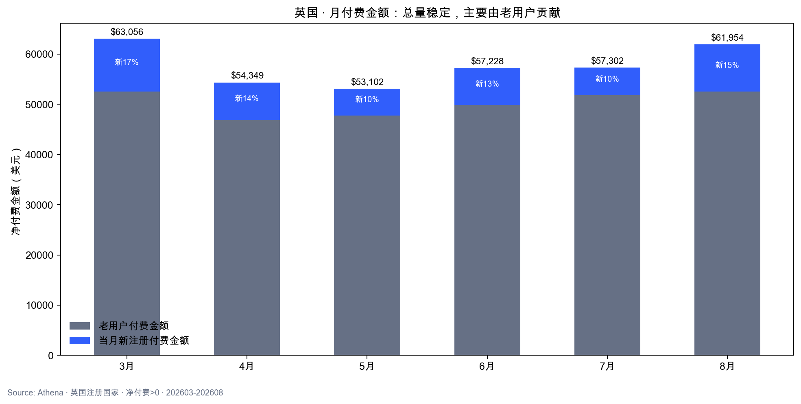
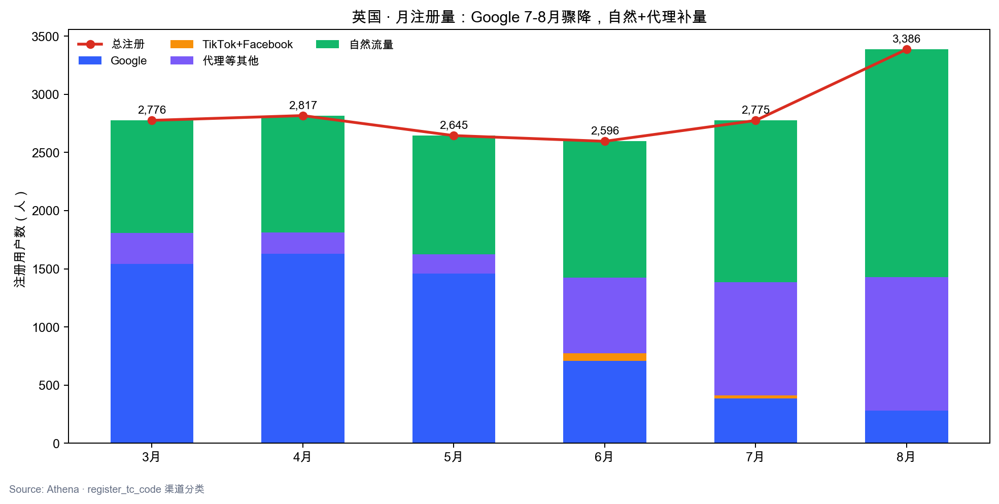
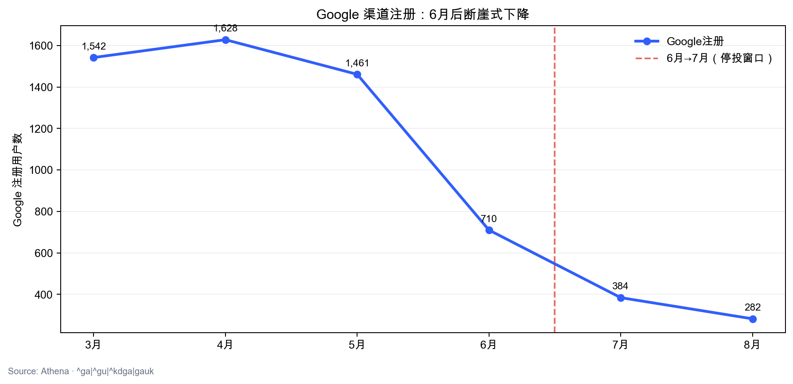
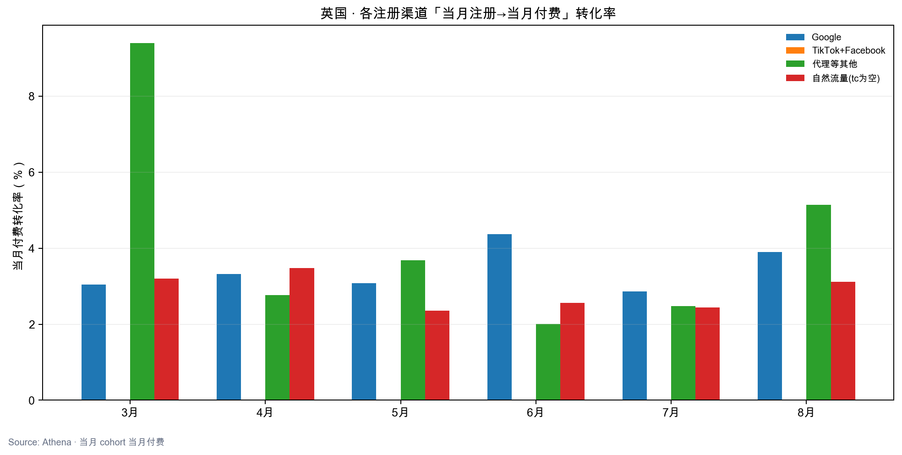
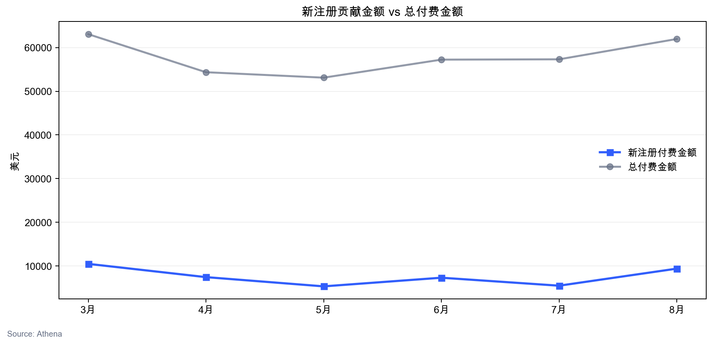

一句话结论：Google 停投对英国「总付费金额」影响有限——6个月总付费在 $5.3万–$6.3万/月窄幅波动，8月仍达 $61,954；但 Google 注册量在 6→7→8 月断崖式下滑（1,542 → 384 → 282，较 3 月 -82%），新注册付费金额同步走弱。停投主要打击 Google 获客通道，存量老用户续费/复购仍撑起大盘。
核心发现
1. 付费：老用户托底，新注册贡献有限
- 月总付费金额稳定在 $53k–$63k，波动约 ±10%，未见因停投导致的总付费坍塌。
- 老用户付费占月付费 82%–91%（新注册占比仅 9%–18%）。
- 当月新注册付费金额从 3 月 $10,488 波动至 8 月 $9,399，6-7 月低点 $7,320、$5,496，与 Google 注册下滑同步。
2. 注册：Google 骤降，自然+代理补位
| 指标 | 3月 | 6月 | 7月 | 8月 | 变化（3→8） |
|---|---|---|---|---|---|
| 总注册 | 2,776 | 2,596 | 2,775 | 3,386 | +610 |
| 1,542 | 710 | 384 | 282 | -1,260（-82%） | |
| 自然流量 | 967 | 1,174 | 1,391 | 1,957 | +990 |
| 代理等其他 | 266 | 648 | 970 | 1,147 | +881 |
- 6 月起 Google 注册从 1,400+ 级降至 700 以下，7-8 月仅 282–384，与停投时间高度吻合。
- 8 月总注册反升至 3,386（+22% vs 3月），靠自然流量（1,957）+ 代理（1,147）补量，但 Google 几乎归零。
- TikTok+Facebook 英国量一直很小（月 0–64），停投期不是主变量。
3. 分渠道当月付费转化
- Google 当月付费率稳定在 ~3.0%–3.3%。
- 代理等其他部分月份更高（如 3 月 9.4%），8 月 Google 仅 282 人注册、8 人付费，样本极小。
- 自然流量当月付费率 ~3.2%–3.5%，与 Google 接近。
4. 停投实验判断
| 维度 | 是否受影响 | 说明 |
|---|---|---|
| 总付费金额 | 影响小 | 老用户贡献 82%+，月度总量稳定 |
| Google 注册 | 影响极大 | 7-8 月 Google 注册较 3 月 -82% |
| 新注册付费 | 中度影响 | 新注册付费金额随 Google 注册下滑而收缩 |
| 总注册 | 影响有限 | 8 月总量甚至上升，结构从广告转向自然/代理 |
1. 月付费金额拆分
| 月份 | 总付费金额 | 新注册付费金额 | 老用户付费金额 | 新注册占比 |
|---|---|---|---|---|
| 3月 | $63,056 | $10,488 | $52,568 | 16.6% |
| 4月 | $54,349 | $7,455 | $46,894 | 13.7% |
| 5月 | $53,102 | $5,343 | $47,759 | 10.1% |
| 6月 | $57,228 | $7,320 | $49,908 | 12.8% |
| 7月 | $57,302 | $5,496 | $51,807 | 9.6% |
| 8月 | $61,954 | $9,399 | $52,555 | 15.2% |

2. 月注册量 · 分渠道
| 月份 | 总注册 | TikTok+Facebook | 代理等其他 | 自然流量 | |
|---|---|---|---|---|---|
| 3月 | 2,776 | 1,542 | 1 | 266 | 967 |
| 4月 | 2,817 | 1,628 | 2 | 181 | 1,006 |
| 5月 | 2,645 | 1,461 | 0 | 163 | 1,021 |
| 6月 | 2,596 | 710 | 64 | 648 | 1,174 |
| 7月 | 2,775 | 384 | 30 | 970 | 1,391 |
| 8月 | 3,386 | 282 | 0 | 1,147 | 1,957 |


3. 分注册渠道 · 当月付费表现
| 月份 | 渠道 | 注册数 | 当月付费人数 | 当月付费金额 | 付费转化率 |
|---|---|---|---|---|---|
| 3月 | 1,542 | 47 | $4,660 | 3.05% | |
| 3月 | TikTok+Facebook | 1 | 0 | $0 | 0.00% |
| 3月 | 代理等其他 | 266 | 25 | $3,144 | 9.40% |
| 3月 | 自然流量(tc为空) | 967 | 31 | $2,684 | 3.21% |
| 4月 | 1,628 | 54 | $4,172 | 3.32% | |
| 4月 | TikTok+Facebook | 2 | 0 | $0 | 0.00% |
| 4月 | 代理等其他 | 181 | 5 | $215 | 2.76% |
| 4月 | 自然流量(tc为空) | 1,006 | 35 | $3,068 | 3.48% |
| 5月 | 1,461 | 45 | $3,347 | 3.08% | |
| 5月 | TikTok+Facebook | 0 | 0 | $0 | 0.00% |
| 5月 | 代理等其他 | 163 | 6 | $372 | 3.68% |
| 5月 | 自然流量(tc为空) | 1,021 | 24 | $1,624 | 2.35% |
| 6月 | 710 | 31 | $2,206 | 4.37% | |
| 6月 | TikTok+Facebook | 64 | 0 | $0 | 0.00% |
| 6月 | 代理等其他 | 648 | 13 | $1,024 | 2.01% |
| 6月 | 自然流量(tc为空) | 1,174 | 30 | $4,090 | 2.56% |
| 7月 | 384 | 11 | $791 | 2.86% | |
| 7月 | TikTok+Facebook | 30 | 0 | $0 | 0.00% |
| 7月 | 代理等其他 | 970 | 24 | $1,573 | 2.47% |
| 7月 | 自然流量(tc为空) | 1,391 | 34 | $3,132 | 2.44% |
| 8月 | 282 | 11 | $657 | 3.90% | |
| 8月 | TikTok+Facebook | 0 | 0 | $0 | 0.00% |
| 8月 | 代理等其他 | 1,147 | 59 | $4,291 | 5.14% |
| 8月 | 自然流量(tc为空) | 1,957 | 61 | $4,451 | 3.12% |


口径说明
- 国家：注册国家 = 英国（ads_user_info_df.country = united kingdom）。
- register_tc_code：2025-11-07 及以后取 kalo_register_tc_code（空则视为 tc 空，不回退 register_tc_code）。
- 渠道分类：Google（^ga|^gu|^kdga|gauk）、TikTok+Facebook（^tk|^fb）、代理等其他（tc 非空且不属于上述）、自然流量（tc 为空）。
- 付费：ads_order_all_di 净付费 = user_paid - refund/100 > 0，全产品。
- 当月新注册付费：注册月 = 付费月；老用户付费 = 注册月早于付费月的用户在该月付费。
- 当月付费转化率 = 当月注册且在当月付费人数 / 当月该渠道注册人数。